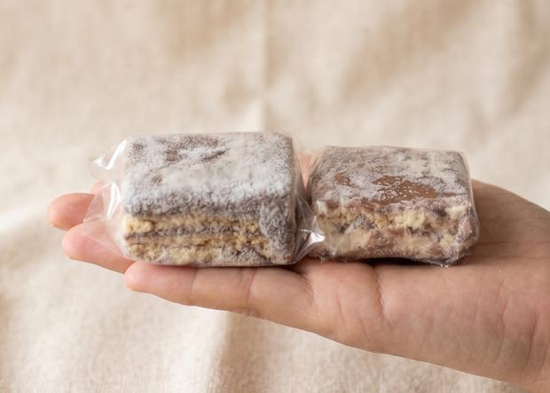
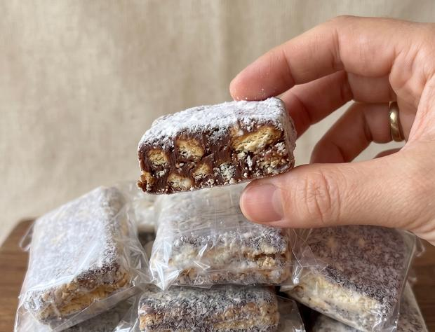
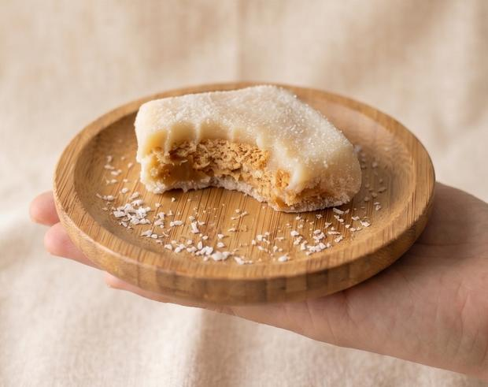

Palhas italianas artesanais
Feita em casa, uma a uma, em lote pequeno. Biscoito em pedaço grande, chocolate de verdade e leite em pó por fora. Sai da cozinha, vai para o saquinho e chega inteira na sua mão.
Fazer uma encomenda
O nome é uma piada com o que todo mundo diz antes de comer três. A gente aceitou o apelido e passou a fazer as contas por caixa.
O que é
Palha italiana é biscoito maisena quebrado dentro de um brigadeiro firme, deixado para descansar até virar uma barra que se corta com faca. A receita cabe em três linhas. O que muda de uma para outra é o cuidado, e é aí que quase todo mundo economiza.
A diferença aparece na hora da mordida. Biscoito moído fino vira farinha e some no chocolate, deixando o doce pesado e sem textura. A gente quebra em pedaço grande, na mão, para o biscoito continuar sendo biscoito.
O chocolate é chocolate, não cobertura fracionada. Custa mais e derrete mais fácil no verão, o que dá trabalho. Em compensação, o doce não deixa aquela película de gordura no céu da boca.
E o ponto do cozimento é o que decide se a palha fica dura na geladeira ou macia. A nossa sai do fogo antes do que a maioria manda, e por isso ela cede quando você aperta. Não é doce de guardar seis meses. É doce de comer nesta semana.

O detalhe que muda
Quase toda palha italiana é finalizada com açúcar de confeiteiro. É barato, fica bonito na foto e arranha a garganta na terceira mordida, além de deixar o doce ainda mais doce do que ele já é.
A nossa é passada em leite em pó. Muda o gosto e muda o final: em vez de mais açúcar por cima de açúcar, entra um lácteo que segura o doce e deixa um resto de leite na boca. É a diferença entre querer água depois da segunda e querer a terceira.
Efeito colateral honesto: o leite em pó é mais opaco que o açúcar e absorve mais a luz. As fotos ficam menos brilhantes. A gente preferiu o sabor.
Como é feita
O biscoito é quebrado na mão, em pedaço grande. Processador vira farinha e farinha vira massa pesada.
O brigadeiro sai do fogo antes de endurecer demais. É o que faz a palha ceder à mordida em vez de resistir.
A massa descansa até firmar sozinha. Sem pressa e sem congelador, que deixa o doce quebradiço.
Cortada com faca, passada no leite em pó e embalada uma a uma, ainda na cozinha.
O que sai da cozinha
Lote pequeno significa cardápio curto. Prefiro fazer duas coisas bem a listar dez e não ter nenhuma pronta.
Biscoito maisena em pedaço grande, chocolate meio amargo e leite em pó por fora. É a receita da casa e a que some primeiro.
Cobertura clara e recheio de doce de leite, finalizada em coco. Feita por encomenda, com aviso de um dia.

Encomenda
A produção é diária e o lote é pequeno, então encomenda tem hora. O pedido do dia seguinte fecha às 20h. Depois disso entra para o dia subsequente, e não adianta insistir: a massa precisa descansar.
Para festa, reunião ou pedido grande, avise com dois dias. Acima de trinta unidades a cozinha precisa se organizar, e vale a pena combinar embalagem antes.
Como guardar: mantenha na geladeira e tire vinte minutos antes de comer. Gelada, a palha fica firme demais e você perde metade da graça. Fora da geladeira ela aguenta o dia, mas no calor o chocolate amolece.
Diga quantas e para quando. Sem formulário e sem cadastro.
Retirada combinada ou entrega no bairro, conforme o dia.
Pix ou dinheiro, na retirada. Nada de antecipado.
Perguntas que sempre chegam
Cinco dias na geladeira, bem fechada. Como não leva conservante, o prazo é curto de propósito. Se sobrar, congele: aguenta um mês e volta bem, só perde um pouco da maciez.
Dá. Congele ainda no saquinho, sem tirar da embalagem. Para comer, passe da noite para o dia na geladeira. Não descongele no micro-ondas, porque o chocolate separa.
Sim. Contém leite, glúten e soja. É feita em cozinha doméstica, onde também se manipulam castanhas, então não é indicada para quem tem alergia grave a oleaginosas.
Ainda não. Palha italiana é biscoito e leite condensado, então uma versão sem esses dois ingredientes é outra receita, não uma adaptação. Quando existir, vai estar aqui.
Entrega combinada por WhatsApp, conforme o dia e o tamanho do pedido. Retirada sempre disponível no horário combinado.
Aceita, com dois dias de antecedência. Para mais de trinta unidades, combine antes a embalagem: caixa fechada, saquinho individual ou bandeja para servir mudam o preço e o prazo.